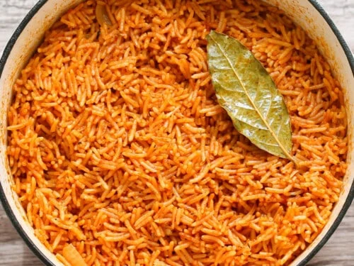

Recipe Details
-
Prep Time:
15 minutes
-
Cook Time:
30 minutes
-
Servings:
2
-
Difficulty:
Easy
Ingredients list
- 2 cups long-grain parboiled rice
- 4 medium tomatoes (blended)
- 1 red bell pepper (tatashe, blended)
- 1 small onion (chopped)
- 2 tablespoons tomato paste
- 2 cups chicken stock or water
- 1 teaspoon curry powder
- 1 teaspoon thyme
- 2 seasoning cubes
- 3 tablespoons vegetable oil
- Salt to taste
Picture
This is how the Jollof Rice should look when it's ready to be served.
The vibrant red color comes from the tomatoes and peppers, and it's
often garnished with fried plantains or a side of protein like chicken
or fish.

Instructions
- Wash the rice thoroughly and set aside.
-
Heat vegetable oil in a pot and add the chopped onions until soft.
-
Add tomato paste and fry for 3–5 minutes to reduce its sour taste.
-
Pour in the blended tomatoes and pepper, then cook until the sauce
thickens and the oil begins to separate.
- Add curry powder, thyme, seasoning cubes, and salt. Stir well.
- Pour in the chicken stock and bring to a boil.
-
Add the washed rice, stir, and cover the pot. Reduce heat to low.
-
Cook for 20–25 minutes, stirring occasionally to prevent burning.
-
Once the rice is soft and the liquid is absorbed, fluff with a fork
and serve hot.
TIPS
-
For extra flavor, you can add diced vegetables like carrots or peas.
-
Using chicken stock instead of water will enhance the taste of the
rice.
-
Adjust the level of spiciness by adding more or less red pepper.
-
Leftover Jollof Rice can be stored in the refrigerator for up to 3
days and reheated before serving.